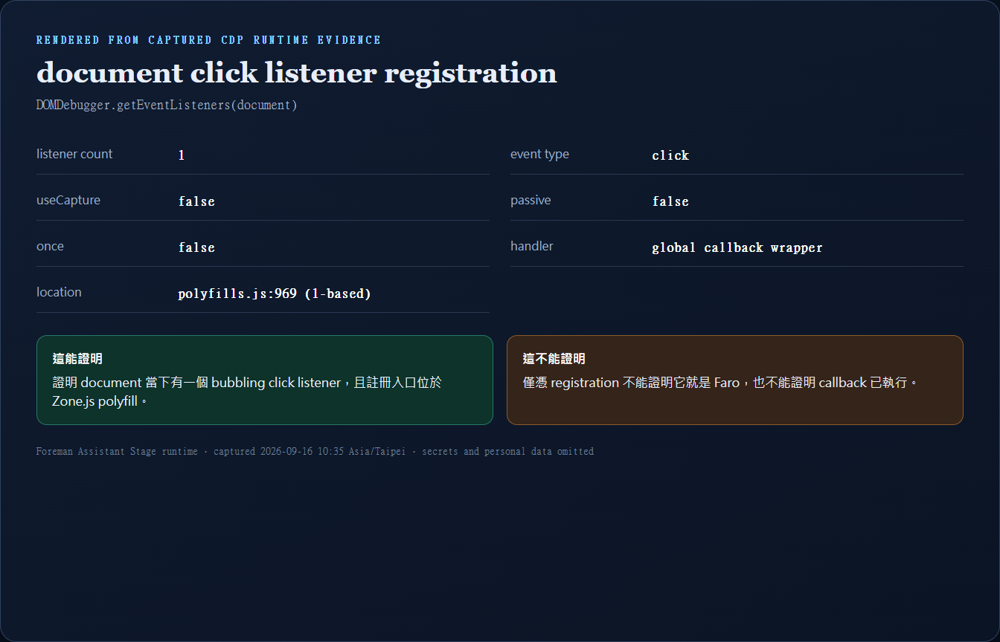
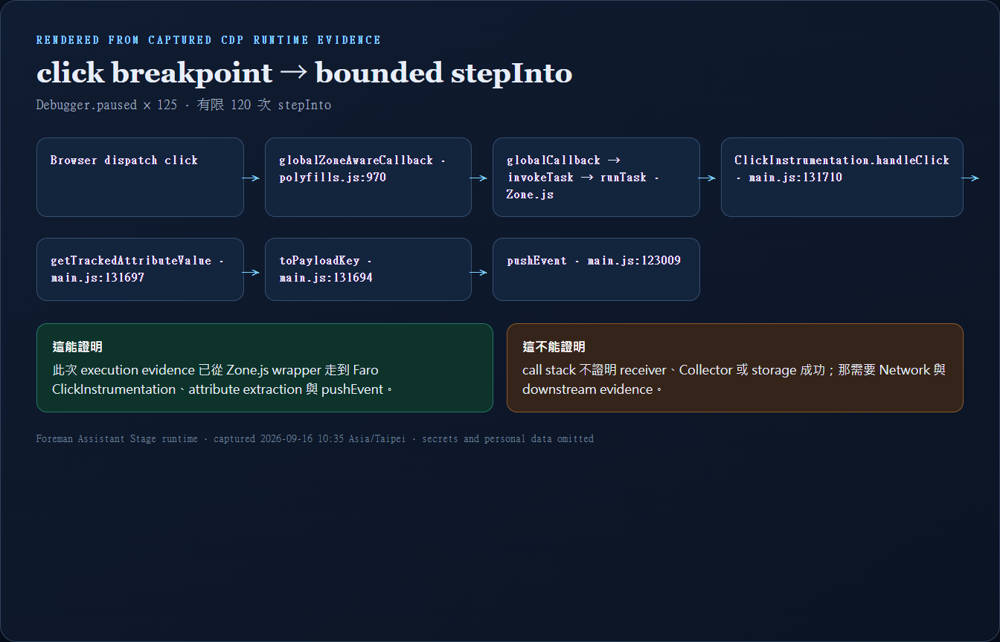
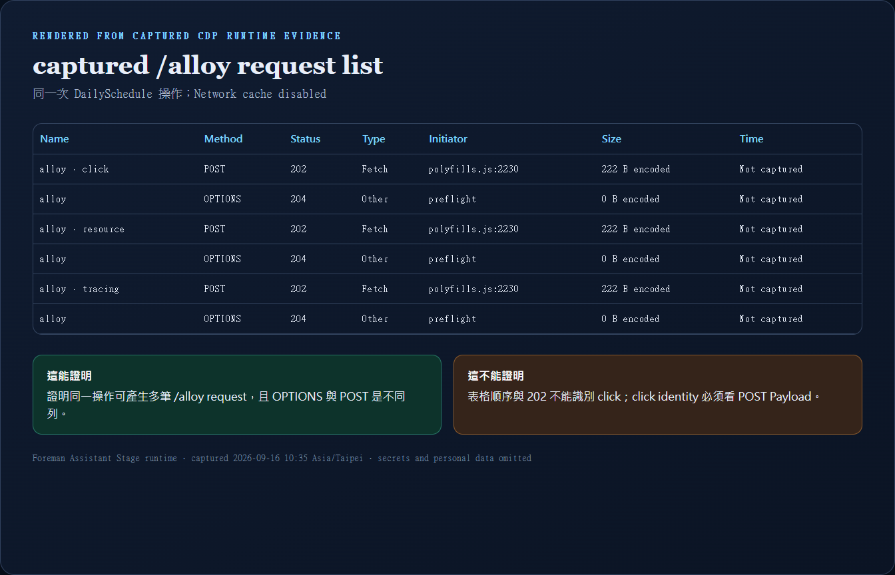
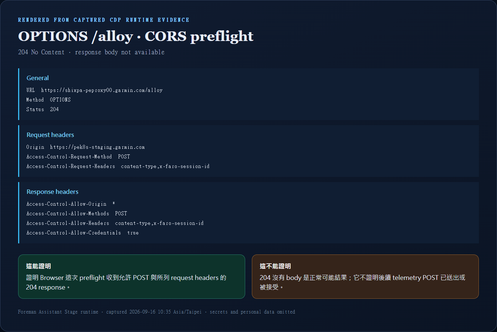
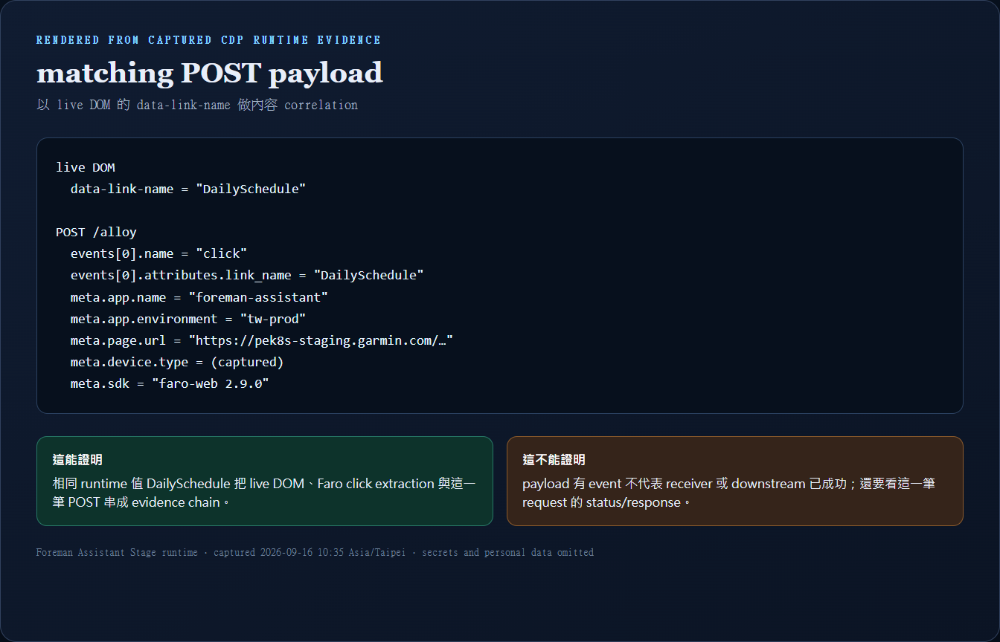
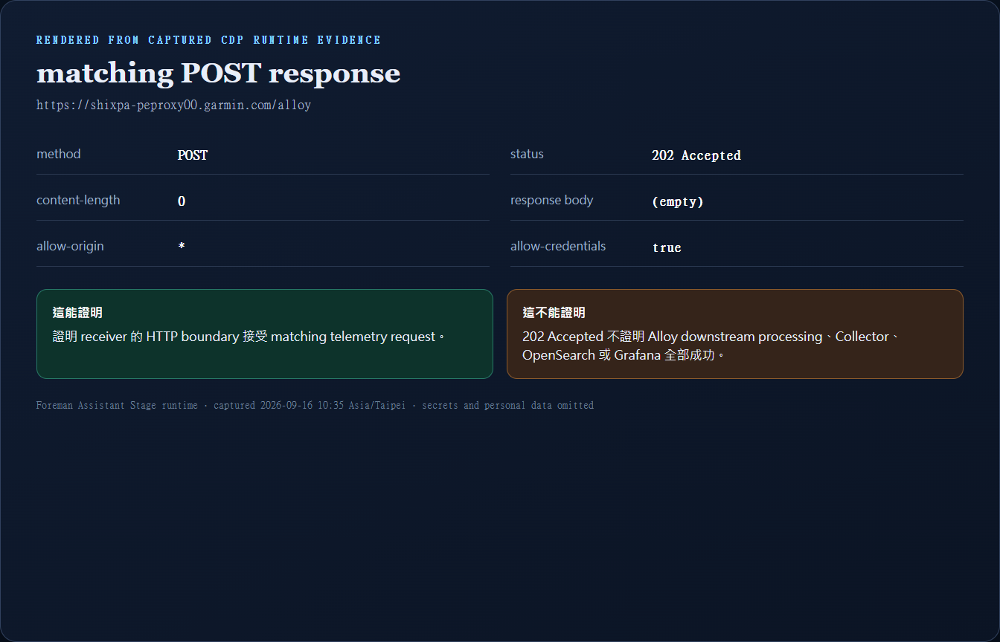

Milestone 3 · Foreman Assistant Stage · Playwright + Chromium DevTools Protocol runtime evidence
先備能力只需要到「能選對 evidence 工作區」，不是精通 DevTools。若還無法區分 DOM 樹、Console 輸出、程式停點與 request table，先讀 Faro debugging 的四個 DevTools 工作區：它說明各區主要內容、適合回答的問題與證明限制，再返回本 Lab。
我現在想證明什麼？
↓ 決定責任邊界
這個問題位於哪個 Browser boundary？
↓ 決定 evidence 類型
哪一種 runtime evidence 能回答？
↓ 才選工具
DevTools 哪個 panel / tab 能看到？
↓ 最後設限
這份 evidence 最遠能證明到哪裡？| 想證明的 claim | Boundary | Evidence | DevTools / CDP |
|---|---|---|---|
| tracking attribute 現在存在嗎？ | live DOM | 實際 element / ancestor attribute | Elements / Runtime |
| listener 有註冊嗎？ | listener registry | type、capture、handler、location | Console / DOMDebugger |
| callback 真的執行嗎？ | JavaScript execution | pause reason 與 call frames | Sources / Debugger |
| HTTP request 有建立嗎？ | Browser network | Network row | Network |
| request 帶了什麼？ | request body | POST Payload | Network → Payload |
| CORS negotiation 成功嗎？ | Browser ↔ receiver | OPTIONS headers | Network → Headers |
| receiver 有接受嗎？ | HTTP receiver | matching POST status / response | Network → Headers / Response |
本課證據於 2026-09-16 10:35（Asia/Taipei）從真實 Foreman Assistant Stage runtime 擷取。Browser 是 Chrome 153；自動化使用 Playwright，listener、breakpoint 與 Network raw evidence 使用 CDP。完整紀錄在 Browser Debug Evidence Card。
手機閱讀：寬幅 evidence 圖可在圖框內左右滑動；頁面本身不會橫向溢出。
另於同日約 18:00–18:06（Asia/Taipei）沿用人工登入的 Browser context 補拍真實 Chrome DevTools UI。真實 UI 圖與標示 Rendered from captured CDP runtime evidence 的欄位摘要卡是兩種不同 artifact；它們來自不同 capture pass，不以列數或時間互相冒充。
Playwright 沒有預設任何 business 名稱，而是先列出 live DOM 中所有可見的 [data-link-name]。此次選到的安全測試入口是：
click target SPAN
↑ parent DIV
↑ parent BUTTON
↑ parent P-BUTTON data-link-name="DailySchedule"實際滑鼠命中的 element 可能是最內層 SPAN；data-link-name 則在外層 PrimeNG P-BUTTON host。從 target 執行 closest('[data-link-name]') 才回到該 ancestor。

Sanitized raw evidence：lesson6-dom-runtime.json。先前人工看過的 EfficiencyAbnormalReport 也在此次 live DOM candidates 中，但本次 correlation 使用的是實際選定的 DailySchedule，不能混用。

data-link-name="DailySchedule"；底部 breadcrumb 是 ancestor 路徑，右側 Styles 是 CSS。這證明 attribute 所在層，不證明 listener 註冊或 execution。可展開 node 追 children；inner target 不一定是這個 host。DevTools Console 的 getEventListeners(document).click 與 CDP DOMDebugger.getEventListeners 都在回答 registration。此次 CDP 結果：

globalZoneAwareCallback。輸入提示列在結果下方。這證明 registration，不證明 Faro 執行；下方 undefined 只是 console.table 的 return value。原始 location 再看下方 CDP 摘要。
document 當下有一個 non-capture click listener，位置在部署中的 polyfills.js；它不能單獨證明 Faro callback 已執行。polyfills.js:969（1-based）。正確 claim 是「document 有 click listener，註冊入口經過 Zone.js」。要證明 Faro handleClick，必須取得 execution evidence。
Raw evidence：lesson6-document-click-listeners.json。

handleClick 的 execution 停點後，再找 extraction／pushEvent；最後 Resume 並移除所有 breakpoint。停住期間 request 未完成，不應直接判 transport failure。CDP 啟用 Debugger，再用 DOMDebugger.setEventListenerBreakpoint({ eventName: 'click' })。Playwright 點擊同一個 DailySchedule element 後，Browser 回報 Debugger.paused。
第一次停點確實是 Zone.js wrapper。Lab 沒有因此宣稱 Faro 已執行，而是對 #document listener 做有限 120 次 stepInto；總計保存 125 個 pause snapshots，最後實際走到：

globalZoneAwareCallback 經 Zone.js task，進入 ClickInstrumentation.handleClick、getTrackedAttributeValue、toPayloadKey，再到 pushEvent。這次已證明 Faro click callback 與 extraction/push path 實際執行；它仍不能證明任何 HTTP 或 downstream 成功。pause reason = EventListener
top frame = globalZoneAwareCallback
script = /foreman-assistant/polyfills.js:970
bounded stepInto 後：
ClickInstrumentation.handleClick /foreman-assistant/main.js:131710
getTrackedAttributeValue /foreman-assistant/main.js:131697
toPayloadKey /foreman-assistant/main.js:131694
pushEvent /foreman-assistant/main.js:123009這比「call stack 裡好像有 zone.js」更強：它把 Browser dispatch → Zone.js wrapper → Faro callback → extraction → pushEvent 串成 execution chain。行號是當次 deployed bundle 的 1-based line，只是 evidence locator，不是永久 contract。
Raw evidence：lesson6-click-breakpoint.json。

main.js 核對 callback，再設 line breakpoint；中間黃底是 clickInstrumentation.js:29（source map），底部顯示 From main.js；右側 Call Stack 從 callback 接到 invokeTask／runTask／globalZoneAwareCallback。這直接證明 callback 已進入，不證明 HTTP 已送出；這張的 pause reason 是 line breakpoint 的 other，不是原先 EventListener pause。灰色 frames 是 ignore list，不是沒執行。
alloy → table 的 Method／Status／Type 先分流；右側 Waterfall 看順序與耗時，不當 click identity。補拍 pass 有 13 列，Time 約 10–74 ms；不是下方原始六列 CDP capture。這證明 Browser 記錄到多筆 HTTP 往返，不證明哪列是 click 或下游成功。若沒有 Method 欄，在 table header 按右鍵勾 Method；Waterfall 也可從欄位選單開啟。先開 Network 確認紅色 recording icon，再操作；alloy filter 只是縮小顯示範圍。選 request 的 Name cell 才進入 Headers／Payload／Response 等 detail tabs。
看到 alloy 不要立刻點 Payload。先用前三個判斷欄位分流：
Method + Type + Status
OPTIONS + preflight + 204 → CORS negotiation
POST + fetch + 202 → telemetry request| 欄位 | 先回答什麼 | 本次限制 |
|---|---|---|
| Name | 資源名稱；此處都是 alloy。 | 單靠 Name 分不出 click。 |
| Status | 這一個 HTTP boundary 的結果。 | 不能跨層推論 downstream。 |
| Type | 快速分辨 fetch 與 preflight role。 | CDP raw type 對 OPTIONS 顯示 Other，initiator 才標示 preflight。 |
| Initiator | 哪個 runtime call site 建立 request。 | polyfills.js 不是 event identity。 |
| Size | Network transfer / encoded bytes。 | 不是 payload semantic。 |
| Time | request duration。 | 原始 CDP pass 未保存；補拍 DevTools pass 的 UI 與 projected runtime JSON 已捕捉，兩者不能混算。 |

| 你要判斷 | 先選哪種 request / 工具 | 主要看哪裡 |
|---|---|---|
| 這是 preflight 嗎？ | OPTIONS | Method + Type + Status |
| CORS 是否允許？ | OPTIONS + Console | Request / Response Headers |
| 這是 telemetry 嗎？ | POST | General → Payload → Response |
| 哪一筆是 click？ | POST | Payload 的 events[] |
| receiver 是否接受？ | matching POST | Status / Response |
| Faro callback 是否執行？ | Event Listener Breakpoint | call frames；不是 Network |


204 permission response；它不能證明 POST 已成功。此次 response body 是 Not available。在 204 No Content preflight，沒有 body 是正常可能結果；不能把 DevTools 的「No content available for preflight request」直接解讀成 request failure。

No content available for preflight request；回到同筆 Headers 可見 204。這只表示該 body 無法提供，不是 HTTP failure evidence，也不是 POST 成功 evidence。OPTIONS 優先讀 Headers，不追這個 body。
name="click" 與 link_name="DailySchedule"。index 1 還有 resource event，示範一個 request 可批次帶多個 events。這是內容 correlation，不是靠 request 順序；meta 個人物件保持收合，敏感值分享前 redact。本次有多筆 POST /alloy：click、resource performance、tracing。唯一可靠的 click correlation 是 payload 內容：

DailySchedule。這證明這一筆 POST 的 click event 對應剛才選到的 DOM value；它不能單獨證明 receiver 已接受。剛才從 live DOM 讀到的 data-link-name 值 = DailySchedule
POST events[0].name = click
POST events[0].attributes.link_name = DailySchedule同一個 runtime value 建立這條 evidence chain：
live DOM attribute
──被 getTrackedAttributeValue 讀取──▶
ClickInstrumentation payload
──被 pushEvent 交給 Faro──▶
matching POST /alloy payload
[REDACTED]，不要拿它當 correlation。這證明 receiver HTTP boundary 接受同筆 request，不證明下游處理完成。

202 Accepted、Content-Length: 0 與空 body。這證明 receiver 的 HTTP boundary 接受 request；它不能證明 Alloy downstream processing、Collector、OpenSearch 或 Grafana 全部成功。Browser
──POST /alloy + matching click payload──▶
receiver HTTP boundary
──202 Accepted──▶ Browser
證明到這裡為止。
receiver → Alloy pipeline → Collector → storage → query
仍需要各層自己的 evidence。| 層級 | 本次可說的話 |
|---|---|
| Observed runtime fact | 頁面 host 是 pek8s-staging.garmin.com；matching POST 送到 https://shixpa-peproxy00.garmin.com/alloy；payload meta.app.environment 是 tw-prod。 |
| Expected from source/config | 既有 source evidence 顯示 Foreman main.ts 傳入 environment: 'tw-prod'，package resolver 將它映射到 prod receiver。 |
| Intended design | 目前沒有 deployment requirement / policy evidence 說 Stage 必須使用哪個 Faro environment。 |
| Bug conclusion | Unknown。觀察到不尋常組合，不等於已證明 bug。 |
Source/config 對照：Foreman integration、Browser → Alloy。Runtime 結論以本次 Evidence Card 為準。
| 觀察 | 可以縮小到哪裡 | 下一個 evidence |
|---|---|---|
| DOM 沒有 attribute | host markup / render boundary | Elements + component source |
| DOM 有值，breakpoint 到不了 Faro | listener / execution boundary | registration + call frames |
| Faro callback 執行，沒有 POST | Faro transport / Browser policy | Console + Network |
| OPTIONS 失敗 | CORS boundary | OPTIONS headers + Console error |
| POST 非 2xx | receiver HTTP boundary | status / response / receiver logs |
| POST 202，storage 查不到 | Browser 已非 first broken boundary | Alloy → Collector → storage evidence |
getEventListeners(document) 只顯示 Zone.js wrapper，最精確的結論是？POST /alloy，哪個 evidence 能找出剛才的 click？202 Accepted，最遠能證明哪裡？SPAN，data-link-name 在 ancestor P-BUTTON。ClickInstrumentation.handleClick、attribute extraction 與 pushEvent。DailySchedule。有任何一層不清楚，可以把 claim 與目前看到的 evidence 貼給 agent；先不要只說「Network 看起來怪怪的」。